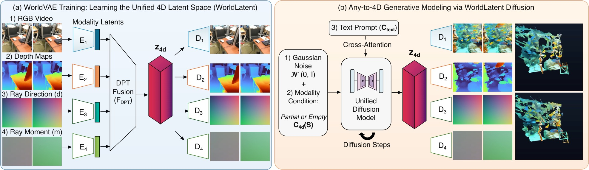

Abstract
Generative Pre-Training (GPT) represents a profound milestone in natural language processing, serving as the foundation for most of today’s state-of-the-art large language models. By casting diverse understanding and generation problems into a shared token representation, GPT enables a single architecture and unified optimization loop to master heterogeneous tasks across massive corpora, giving rise to powerful foundation models for natural language. In contrast, 4D spatiotemporal vision lacks a common representational protocol: perception (such as depth and camera estimation) and generation are either handled by separate one-way pipelines or bolted together from unaligned single-modality spaces. In this work, we introduce WorldLatent, a framework that formulates a unified 4D latent space as a common protocol for both world perception and generation. Rather than relying on fragmented, task-specific models or stacked single-modality representations, our framework proposes a multimodal VAE architecture that compresses and fuses complex 4D visual appearance, geometry, and dynamics into a single structured latent representation. Within this formulation, perception and generation operate as complementary denoising processes over the same latent space, enabling one generative model to learn both capabilities simultaneously within a single training loop. Experiments across representative 4D benchmarks verify that our fused latent protocol achieves specialist-level zero-shot 4D perception, coherent 4D generation, and controllable editing from a single model. By demonstrating that diverse 4D tasks can be seamlessly unified under a shared representational protocol, our work provides a scalable foundation for general-purpose 4D spatial intelligence.
Method
WorldLatent is trained in two stages. (a) A multimodal VAE (WorldVAE) encodes RGB video, depth and camera rays (Plücker ray directions and moments) with modality-specific encoders and fuses them with a DPT into a single latent z4d, which has the same number of tokens as an RGB-only video VAE; four decoders reconstruct every modality from it. (b) With WorldVAE frozen, one diffusion model learns to generate the full z4d from any subset of modalities: an RGB video for 4D perception, text alone for text-to-4D generation, and depth plus text for 4D editing, all in a single multi-task training loop.

Video Results
All results come from one WorldLatent-14B model, which generates 17-frame 4D sequences at 512 × 512 resolution across RGB, depth and Plücker ray maps (camera).
4D Perception
Video depth compared against 10 baselines on KITTI, Sintel, Bonn and ScanNet.
RGB video → depth, camera, 3D geometry
02Depth-conditioned Re-rendering
Our estimated depth plus a new text prompt changes a video’s appearance but keeps its geometry and motion.
RGB video + text → re-rendered video
03Text-to-4D Generation
From a text prompt alone, the model generates the RGB video, its depth maps and camera trajectory.
Text → RGB, depth, camera, 3D geometry
04Latent Decomposition
Appearance changes with the text prompt while the geometry-and-camera part of the latent stays fixed.
Same depth + new prompts → latent projections
Videos in each example start together and stay in sync, and only the examples on screen play. Use Speed in the bar above to slow playback, and click any video to view it larger.
4D Perception
Qualitative video depth comparison on KITTI, Sintel, Bonn and ScanNet. Panels, from left to right and top to bottom: input RGB, ground-truth depth, WorldLatent-14B (Ours), DA3-Giant (Teacher), VGGT-1B, CUT3R-512, MonST3R, DUSt3R, MASt3R, Video-Depth-Anything-L, DepthCrafter, Marigold-v1.1 and Metric-VDA-Large.
Beyond depth: camera and 3D geometry
Monocular 4D perception also estimates camera poses, so each input video can be lifted to a 3D point cloud with its camera trajectory. Explore several scenes in the interactive 3D viewer below.
Depth-conditioned 4D Re-rendering
Using a single WorldLatent-14B checkpoint, we first perform monocular 4D perception on each input RGB video to estimate dense depth and camera poses (top row). We then condition on the predicted depth together with new text prompts to synthesize geometrically consistent, appearance-edited videos (bottom row). The full text prompts are given below each result.
Text-to-4D Generation
Given only a text prompt, our model generates the RGB video together with its depth maps and camera trajectory, from which the 3D geometry is recovered. All eight generated scenes can also be explored in the interactive 3D viewer at the end of this section.
Linear Subspace Decomposition of WorldLatent
We decompose the latent z4d = Π∥z4d + Π⊥z4d into a 16-D appearance subspace (Π∥, aligned with RGB) and an orthogonal 16-D geometry-and-camera subspace (Π⊥, encoding depth and Plücker rays). Each column re-renders the same depth sequence with a different text prompt: the appearance projection varies markedly with visual style, whereas the geometry-and-camera projection remains nearly invariant.
BibTeX
If you find WorldLatent useful in your research, please cite our paper:
@article{chen2026worldlatent,
title={WorldLatent: A Unified 4D Latent Space for World Perception and Generation},
author={Chen, Jingxi and Chen, Yujia and Fermuller, Cornelia and Aloimonos, Yiannis and Chu, Wen-Sheng and Tran, Du},
journal={arXiv preprint arXiv:2611.31209},
year={2026}
}